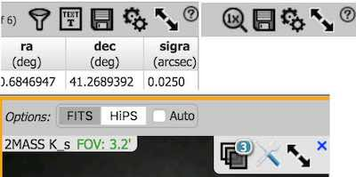
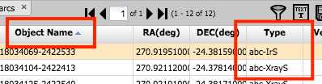
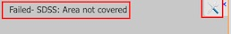
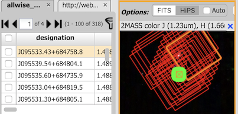

- toolbars matches above - widgets loaded

sortBy column name contains spaces
FmtDisp is used to format text
Table successfully loaded
VOTable
first 3 rows of gaia_source
Image load fails. The following should happen:
No image,
centered message
: "Failed- SDSS: Area not covered"
Toolbar button active, when toolbar popup shown, toolbar should have "select image" button active

Click table's Help(?) icon and it should take you to "https://irsa.ipac.caltech.edu/onlinehelp/irsaviewer/#id=tables" instead of firefly's help.
Both tables cover similar area, HiPS coverage
one from url, one from service
one with points, one with corners

Chart specs are passed with the table requests
chart should be without toolbar and non-interactive
table paging should cause chart hightlight change, but not chart reload
when changing active table, the chart should change